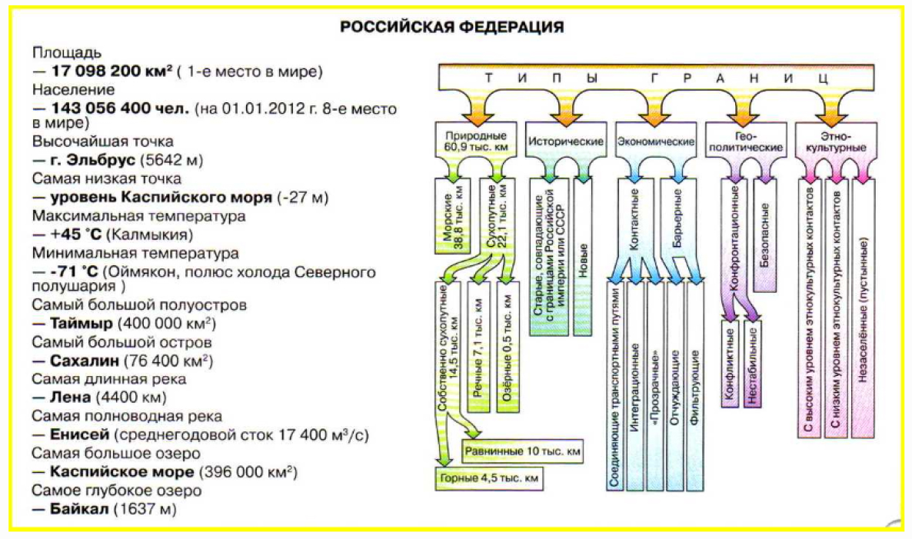

Территория и границы России
Границы России
Общая протяженность границ составляет 58,6 тыс. км, из которых 14,3 тыс. км – сухопутные, а 44,3 тыс. км – морские. Морские границы проходят в 12 морских милях (22,7 км) от берега, а граница морской экономической зоны – в 200 морских милях (около 370 км).
На западе страна граничит с Норвегией, Финляндией, Эстонией, Латвией и Белоруссией. Калининградская область имеет границу с Литвой и Польшей. На юго-западе Россия граничит с Украиной; на юге – с Грузией, Азербайджаном, Казахстаном, Монголией, Китаем и Северной Кореей. Самую протяженную (7200 км) сухопутную границу Россия имеет с Казахстаном. На востоке – морские границы с Японией и США. На севере границы российского сектора Арктики проведены по меридианам острова Ратманова и крайней северной точки сухопутной границы с Норвегией до Северного полюса.
Крупнейшие по площади острова России — это Новая Земля, Сахалин, Новосибирские, Северная Земля, Земля Франца-Иосифа.
Крупнейшие полуострова России — Таймыр, Камчатка, Ямал, Гданьский, Кольский.
Описание границы Российской Федерации
Северная и восточная границы морские, а западная и южная — преимущественно сухопутные. Большая протяженность государственных границ России определяется размерами ее территории и очертаниями береговых линий.
Западная граница начинается на побережье Баренцева моря от Варангер-фьорда и проходит вначале по всхолмленной тундре, затем по долине реки Паз. На этом участке Россия граничит с Норвегией. Далее соседом России является Финляндия. Граница идет по возвышенности Маанселькя, по сильно-заболоченной местности, по склону невысокой гряды Салпаусселькя и в 160 км юго-западнее Выборга подходит к Финскому заливу Балтийского моря. На крайнем западе, на берегу Балтийского моря и его Гданьского залива, находится Калининградская область России, которая граничит с Польшей и Литвой. Большая часть границы области с Литвой проходит по Неману (Нямунас) и его притоку — реке Шешупе.
От Финского залива граница идет по реке Нарве, Чудскому и Псковскому озерам и далее преимущественно по низким равнинам, пересекая более или менее значительные возвышенности (Витебскую, Смоленско-Московскую, южные отроги Среднерусской, Донецкий кряж) и реки (верховье Западной Двины, Днепра, Десны и Сейма, Северский Донец и Оскол), иногда по второстепенным речным долинам и небольшим озерам, через лесистые всхолмленные пространства, овражно-балочные лесостепные и степные, преимущественно распаханные, просторы до Таганрогского залива Азовского моря.
Здесь соседями России на протяжении свыше 1000 км являются Эстония, Латвия, Белоруссия и Украина.
Граница Республики Крым. Россия считает большую часть полуострова Крым неотъемлемой частью своей территории. В соответствии с результатами общекрымского референдума, состоявшегося 16 марта 2014 года, 18 марта 2014 года подписан Договор о вхождении Республики Крым в состав Российской Федерации. Украина считает Крым «временно оккупированной территорией Украины».
Граница Республики Крым на суше, сопряжённая с территорией Украины, является государственной границей Российской Федерации. Разграничение морских пространств Чёрного и Азовского морей осуществляется на основе международных договоров Российской Федерации, норм и принципов международного права.
Южная граница проходит по территориальным водам Черного моря до устья реки Псоу. Здесь проходит сухопутная граница с Грузией и Азербайджаном: по долине Псоу, далее преимущественно по Главному Кавказскому хребту, переходя на Боковой хребет на участке между Рокским и Кодорским перевалами, затем вновь идет по Водораздельному хребту до горы Базардюзю, откуда поворачивает к северу до реки Самур, по долине которой доходит до Каспийского моря. Таким образом, в районе Большого Кавказа граница России четко фиксируется естественными, природными рубежами, крутыми высокими горными склонами. Протяженность границы по Кавказу составляет более 1000 км.
Далее граница России проходит по акватории Каспийского моря, от побережья которого близ восточной окраины дельты Волги начинается сухопутная граница России с Казахстаном. Она проходит по пустыням и сухим степям Прикаспийской низменности, в районе сочленения Мугоджар с Уралом, по южной степной части Западной Сибири и по горам Алтая. Граница с Казахстаном у России самая протяженная (свыше 7500 км), но почти не фиксированная естественными рубежами. По территории Кулундинской равнины на расстоянии около 450 км граница идет с северо-запада на юго-восток практически по прямой, параллельно направлению течения Иртыша. Правда, около 1500 км границы проходит по рекам Малый Узень (Прикаспий), Урал и его левому притоку Илеку, по Тоболу и по его левому притоку — реке Уй (наиболее протяженная речная граница с Казахстаном), а также по ряду более мелких притоков Тобола.
Восточная часть границы — по Алтаю — орографически отчетливо выражена. Она проходит по хребтам, отделяющим бассейн Катуни от бассейна Бухтармы — правого притока Иртыша (Коксуйский, Холзунский, Листвяга, на небольших отрезках — Катунский и Южный Алтай).
Почти вся граница России от Алтая до Тихого океана проходит по горному поясу. В районе сочленения хребтов Южный Алтай, Монгольский Алтай и Сайлюгем находится горный узел Таван-Богдо-Ула (4082 м). Здесь сходятся границы трех государств: Китая, Монголии и России. Протяженность границы России с Китаем и Монголией на 100 км длиннее российско-казахстанской границы.
Граница проходит по хребту Сайлюгем, северной окраине Убсунурской котловины, горным хребтам Тувы, Восточного Саяна (Большой Саян) и Забайкалья (Джидинскому, Эрмана и др.). Далее она идет по рекам Аргунь, Амур, Уссури и ее левому притоку — реке Сунгача. Более 80% российско-китайской границы проходит по рекам. Государственная граница пересекает северную часть акватории озера Ханка, проходит по хребтам Пограничный и Черные горы. На крайнем юге Россия граничит с КНДР по реке Туманная (Тумынь- цзян). Протяженность этой границы всего 17 км. По долине реки российско-корейская граница выходит к побережью Японского моря южнее залива Посьет.
Восточная граница России проходит по водным просторам Тихого океана и его морей — Японского, Охотского и Берингова. Здесь Россия граничит с Японией и США. Граница проходит по более или менее широким морским проливам: с Японией — по проливам Лаперуза, Кунаширскому, Измены и Советскому, отделяющим российские острова Сахалин, Кунашир и Танфильева (Малая Курильская гряда) от японского острова Хоккайдо; с Соединенными Штатами Америки в Беринговом проливе, где находится группа островов Диомида. Именно здесь по узкому (5 км) проливу между российским островом Ратманова и американским островом Крузенштерна проходит государственная граница России и США.
Северная граница идет по морям Северного Ледовитого океана.
Акватория
Двенадцать морей трех океанов омывают берега России. Одно море принадлежит к внутреннему бессточному бассейну Евразии. Моря расположены в разных широтах и климатических поясах, различаются происхождением, геологическим строением, размерами морских котловин и формами рельефа дна, а также температурами и соленостью морских вод, биологической продуктивностью и другими природными особенностями.